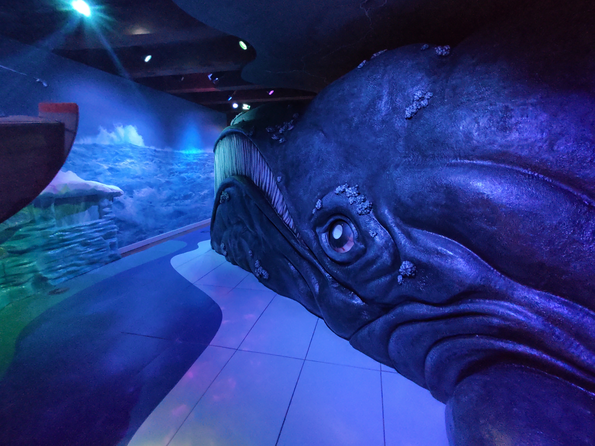
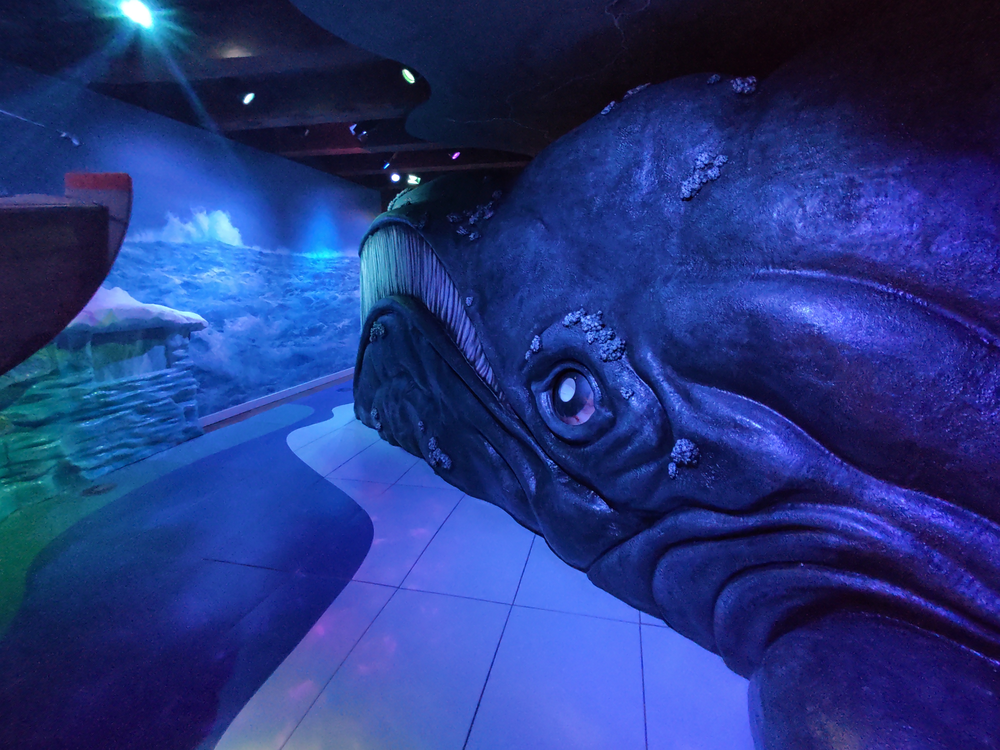

a
Museum Geschiedenis
Het Scheepvaartmuseum (voorheen Nederlands Scheepvaartmuseum Amsterdam) is een Nederlands museum aan het Kattenburgerplein 1 in Amsterdam over de scheepvaart en de maritieme geschiedenis. Het is gevestigd in het gebouw van het voormalige 's Lands Zeemagazijn en bevat de op een na grootste maritieme collectie ter wereld. Het is gespecialiseerd in de maritieme geschiedenis van Nederland.
 

De scheepsornamenten
Het versieren van schepen is van alle tijden en nationaliteiten. Grieken, Romeinen, Vikingen en Hollanders: allemaal versierden ze hun schepen met schilderingen, houtsnijwerk en beelden die bol stonden van de symboliek. Het versterkte de identiteit en afkomst van een schip en haar bemanning. Ook nu nog wemelt het op het water van de gekleurde roerklikken, roerkoppen, mastschilden, mastwortels en stevenversieringen. Op aken die momenteel over ons IJsselmeer varen, tref je bijvoorbeeld vaak een liggende leeuw op de helmstok van het schip.
Reviews
Review
Review
Review
Review
Review
e
Tijden
Maandag: dicht
Dinsdag: 10.00-17.00
Woensdag: 10.00-17.00
Donderdag: 10.00-17.00
Vrijdag: 10.00-17.00
Zaterdag: 10.00-17.00
Zondag: 10.00-17.00
Vakantie tijden
Maandag T/M Vrijdag: 10.00-17.00
a
Prijzen
Kind 0 T/M 3: €0,00
Kind 4 T/M 17: €8,00
Volwassenen: €16,50
Student: €8,00
Museum kaart: €0,00
Stadspas: €0,00